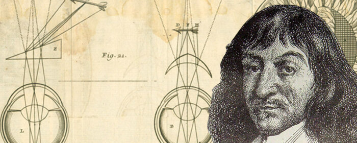

Preceeding the Renaissance was a long period of time where not much intellectual progress was made. Some would trace this to the horrific murder of Hypathia of Alexandria, a philosopher and the woman considered the very first female mathematician in history. As the persecuted Christian minority became the persecutorial majority, any attempts at resisting the conversion to Christianity was considered heretic, and Hypathia was no exception. Fearing that she would be a danger to the rise of Christian power, a mob of fanatical Christians dragged her out to the streets, stabbed her with sharpened oyster shells, and tore her limbs to pieces, then proceeded to discard her remains in a fire. Thus came the end of intellectualism for some time.
The Renaissance was a transformational period that changed the course of history and of mathematics forever. Some notable mathematicians include:
There were several important ideas and concepts brought about during this time that helped shape the modern mathematics we learn these days and also helped create the modern notation that is nearly universally adopted. Such concepts include:
